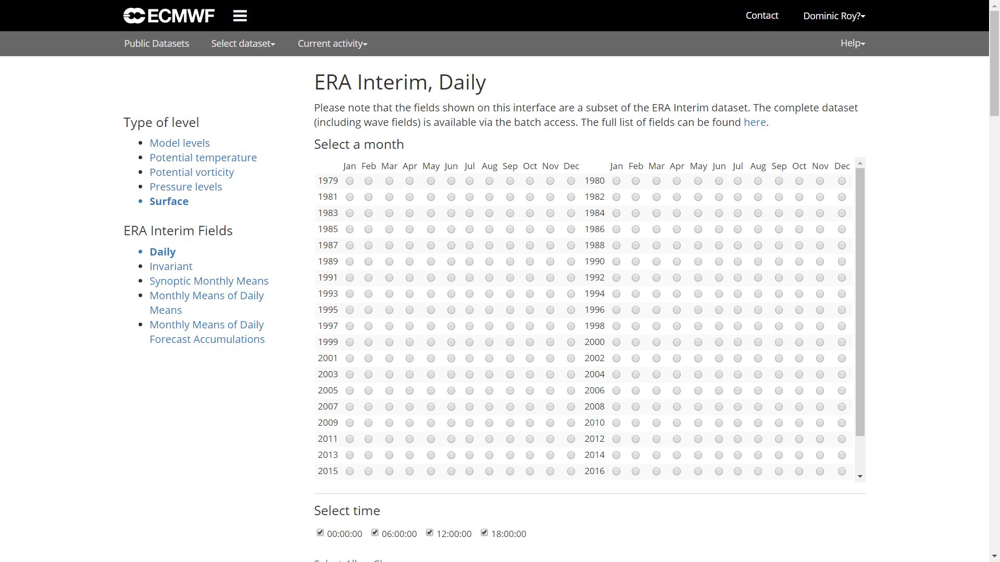
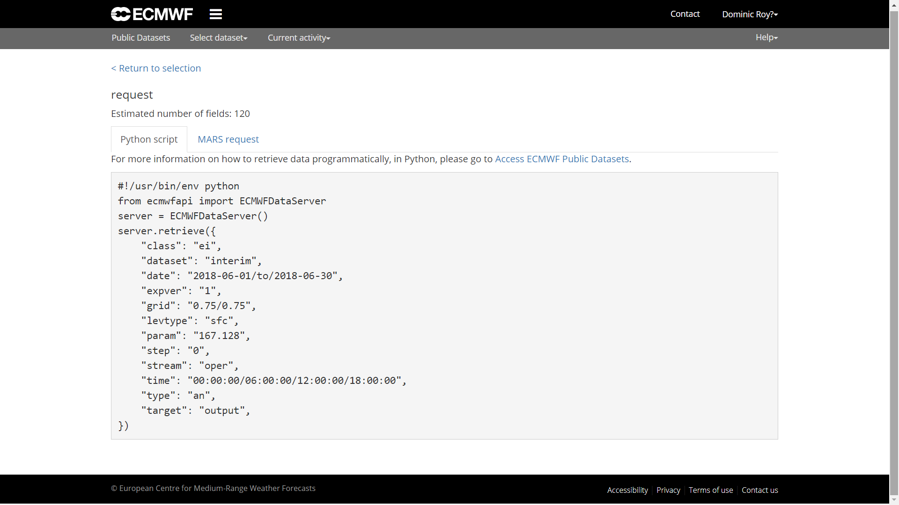

Acceso a datos de los reanálisis climáticos desde R

Un amigo me propuso que presentara los niveles de aprendizaje de R como categorías. Una idea que ahora introduzco para cada entrada del blog. Hay tres niveles: elemental, intermedio y avanzado. Espero que ayude al lector y al usuario R.
1 Introducción
En este post enseñaré cómo podemos descargar y trabajar directamente con datos provenientes de los reanálisis climáticos en R. Se trata de sistemas de asimilación de datos que combinan modelos de pronóstico meteorológico y observaciones de distintas fuentes de forma objetiva con el fin de sintetizar el estado actual y la evolución de multiples variables de la atmósfera, la superficie de la tierra y los océanos. Los dos reanálisis más usados son NCEP-DO (Reanalysis II) de la NOAA/OAR/ESRL, una versión mejorada de NCEP-NCAR (Reanalysis I), y ERA-Interim del ECMWF. Dado que NCEP-DO es de la primera generacióm, se recomienda usar reanálisis de tercera generación, especialmente ERA-Interim. Una visión general de los actuales reanálisis atmosféricos la podemos encontrar aquí. Primero vamos a ver cómo acceder a los datos del NCEP a través de un paquete de R en CRAN que facilita la descarga y el manejo de los datos. Después haremos lo mismo con ERA-Interim, no obstante, para acceder a este último dataset de reanálisis es necesario usar python y la correspondiente API del ECMWF.
2 NCEP
Para acceder a los reanálisis del NCEP es necesario instalar el paquete correspondiente RNCEP. La función principal es NCEP.gather( ). La resolución del reanálisis del NCEP es de 2,5º X 2,5º.
2.1 Paquetes
#instalamos los paquetes RNCEP, lubridate y tidyverse
if(!require("RNCEP")) install.packages("RNCEP")
if(!require("lubridate")) install.packages("lubridate")
if(!require("tidyverse")) install.packages("tidyverse")
if(!require("sf")) install.packages("sf")
#cargamos las librerías
library(RNCEP)
library(lubridate) #la necesitamos para manipular fechas
library(tidyverse) #para visualizar y manipular
library(RColorBrewer) #colores para la visualización
library(sf) #para importar un shapefile y trabajar con geom_sf2.2 Descarga de datos
Descargaremos la temperatura del aire a la altura de 850haPa para el año 2016. Las variables y niveles de presión pueden ser consultados en los detalles de la función ?NCEP.gather. El argumento reanalysis2 nos permite descargar tanto la versión I como la versión II, siendo por defecto FALSE, o sea, se accede al reanálisis I. En todas las consultas obtendremos datos horarios de cada 6 horas (00:00, 06:00, 12:00 y 18:00). Esto supone un total de 1464 valores para el año 2016.
#definimos los argumentos necesarios
month_range <- c(1,12) #período de meses
year_range <- c(2016,2016) #período de años
lat_range <- c(30,60) #rango de latitud
lon_range <- c(-30,50) #rango de longitud
data <- NCEP.gather("air", #nombre de la variable
850, #altura 850hPa
month_range,year_range,
lat_range,lon_range,
return.units = TRUE,
reanalysis2=TRUE)## [1] Units of variable 'air' are degK
## [1] Units of variable 'air' are degK#dimensiones
dim(data) ## [1] 13 33 1464#encontramos en dimnames( ) lon,lat y tiempo
#fechas y horas
date_time <- dimnames(data)[[3]]
date_time <- ymd_h(date_time)
head(date_time)## [1] "2016-01-01 00:00:00 UTC" "2016-01-01 06:00:00 UTC"
## [3] "2016-01-01 12:00:00 UTC" "2016-01-01 18:00:00 UTC"
## [5] "2016-01-02 00:00:00 UTC" "2016-01-02 06:00:00 UTC"#longitud y latitud
lat <- dimnames(data)[[1]]
lon <- dimnames(data)[[2]]
head(lon);head(lat)## [1] "-30" "-27.5" "-25" "-22.5" "-20" "-17.5"## [1] "60" "57.5" "55" "52.5" "50" "47.5"2.3 Promedio mensual
Vemos que se trata de un array de tres dimensiones con [lat,lon,tiempo]. Además, extraemos latitud, longitud y el tiempo. La temperatura está dada en Kelvin. El objetivo aquí será mostrar dos mapas comparando enero y julio de 2016.
#creamos nuestra variable de agrupación
group <- month(date_time)
#estimamos el promedio por mes de la temperatura
data_month <- aperm(
apply(
data, #nuestros datos
c(1,2), #aplicamos a cada serie temporal 1:fila, 2:columna la función mean( )
by, #agrupar por
group, #meses como agrupación
function(x)ifelse(all(is.na(x)),NA,mean(x))),
c(2,3,1)) #reordenamos para obtener un array como el original
dim(data_month) #temperatura 850haP por mes enero a diciembre## [1] 13 33 122.4 Visualización
Ahora, podemos visualizar con ggplot2 la temperatura de enero y julio. En este ejemplo, uso geom_sf( ) del paquetes sf, que hace el trabajo más fácil para visualizar en ggplot objetos espaciales (en el futuro haré un post sobre sf y ggplot). En la dimensión de latitud y longitud vemos que únicamente nos indica para cada fila y columna un valor. Pero necesitamos las coordenadas de todas las celdas de la matriz. Para crear todas las combinaciones entre dos variables usamos la función expand.grid( ).
#primero creamos todas las combinaciones de lonlat
lonlat <- expand.grid(lon=lon,lat=lat)
#lonlat es carácter, ya que fue un nombre, por eso lo convertimos en númerico
lonlat <- apply(lonlat,2,as.numeric)
#lon y lat no están en el orden como lo esperamos
#fila=lon; columna=lat
data_month <- aperm(data_month,c(2,1,3))
#subtraemos 273.15K para convertir K a ºC.
df <- data.frame(lonlat,
Ta01=as.vector(data_month[,,1])-273.15,
Ta07=as.vector(data_month[,,7])-273.15)Antes de visualizar los datos con ggplot2, tenemos que adpatar la tabla. El shapefile con los limites de los países se puede descargar aquí.
#convertimos la tabla ancha en una larga
df <- gather(df,month,Ta,Ta01:Ta07)%>%
mutate(month=factor(month,unique(month),c("Jan","Jul")))
#importamos el limite de países
limit <- st_read("CNTR_RG_03M_2014.shp")## Reading layer `CNTR_RG_03M_2014' from data source
## `E:\GitHub\blog_update_2021\content\es\post\2018-09-15-acceso-a-datos-de-los-reanalisis-desde-r\CNTR_RG_03M_2014.shp'
## using driver `ESRI Shapefile'
## Simple feature collection with 256 features and 3 fields
## Geometry type: MULTIPOLYGON
## Dimension: XY
## Bounding box: xmin: -180 ymin: -90 xmax: 180 ymax: 83.66068
## Geodetic CRS: ETRS89#gama de colores
colbr <- brewer.pal(11,"RdBu")
ggplot(df)+
geom_tile(aes(lon,lat,fill=Ta))+ #temperatura
geom_sf(data=limit,fill=NA,size=.5)+ #limite
scale_fill_gradientn(colours=rev(colbr))+
coord_sf(ylim=c(30,60),xlim=c(-30,50))+
scale_x_continuous(breaks=seq(-30,50,10),expand=c(0,0))+
scale_y_continuous(breaks=seq(30,60,5),expand=c(0,0))+
labs(x="",y="",fill="Ta 850hPa (ºC)")+
facet_grid(month~.)+ #mapa por mes
theme_bw()
3 ERA-Interim
El ECMWF ofrece acceso a sus bases de datos públicos a partir de una pyhton-API. Es necesario estar registrado en la web del ECMWF. Se puede darse de alta aquí. Al tratarse de otro lenguaje de programación, en R debemos usar un interfaz entre ambos lo que nos permite el paquete reticulate. También debemos que tener instalada una distribución de pyhton (versión 2.x o 3.x). En el caso de Windows podemos usar anaconda.
ecmwfr que facilita el acceso a los APIs de Copernicus y ECMWF. La gran ventaja es que no hace falta instalar python. Más detalles aquí. En 2022 publiqué un nuevo post actualizado.
3.1 Instalación
if(!require("reticulate")) install.packages("reticulate")
if(!require("ncdf4")) install.packages("ncdf4") #para manejar formato netCDF
#cargamos las librerías
library(reticulate)
library(ncdf4)Una vez que tenemos instalado anaconda y el paquete reticulate, podemos instalar el paquete python ecmwfapi. La instalación la podemos llevar a cabo, o bien através del CMD de Windows usando el comando conda install -c conda-forge ecmwf-api-client, o bien con la función py_install( ) del paquete reticulate. La misma función permite instalar cualquier librería python desde R.
#instalamos la API ECMWF
py_install("ecmwf-api-client")3.2 Conexión y descarga con la ECMWF API
Para poder acceder a la API es requisito crear un archivo con la información del usuario.
El archivo “.ecmwfapirc” debe contener la siguiente información:
{
"url" : "https://api.ecmwf.int/v1",
"key" : "XXXXXXXXXXXXXXXXXXXXXX",
"email" : "john.smith@example.com"
}La clave podemos obtenerla con la cuenta de usuario aquí.
El archivo se puede crear con el bloc de notas de Windows.
- Creamos un documento “ecmwfapirc.txt”.
- Renombramos este archivo a “.ecmwfapirc.”
El último punto desaparece de forma automática. Después guardamos este archivo en “C:/USERNAME/.ecmwfapirc” o “C:/USERNAME/Documents/.ecmwfapirc”.
#importamos la librería python ecmwfapi
ecmwf <- import('ecmwfapi')
#en este paso debe existir el archivo .ecmwfapirc
server = ecmwf$ECMWFDataServer() #iniciamos la conexiónLlegados a este punto, ¿cómo creamos una consulta? Lo más fácil es ir a la web del ECMWF dónde elegimos la base de datos, en este caso ERA-Interim en superficie, para crear un script con todos los datos necesarios. Más detalles sobre la sintaxis podemos encontrar aquí. Cuando procedemos en la web sólamente tenemos que hacer click en “View MARS Request”. Este paso nos lleva al script en python.


Con la sintaxis del script que nos da la MARS Request podemos crear la consulta en R.
#creamos la consulta
query <-r_to_py(list(
class='ei',
dataset= "interim", #base de datos
date= "2017-01-01/to/2017-12-31", #periodo
expver= "1",
grid= "0.125/0.125", #resolución
levtype="sfc",
param= "167.128", # temperatura del aire (2m)
area="45/-10/30/5", #N/W/S/E
step= "0",
stream="oper",
time="00:00:00/06:00:00/12:00:00/18:00:00", #paso de tiempo
type="an",
format= "netcdf", #formato
target='ta2017.nc' #nombre del archivo
))
server$retrieve(query)El resultado es un archivo netCDF que podemos processar con el paquete ncdf4.
3.3 Procesar ncdf
A partir de aquí, el objetivo será la extracción de una serie temporal de una coordenada más próxima a una dada. Usaremos las coordenadas de Madrid (40.418889, -3.691944).
#cargamos las librerías
library(sf)
library(ncdf4)
library(tidyverse)#abrimos la conexión con el archivo
nc <- nc_open("ta2017.nc")
#extraemos lon y lat
lat <- ncvar_get(nc,'latitude')
lon <- ncvar_get(nc,'longitude')
dim(lat);dim(lon)
#extraemos el tiempo
t <- ncvar_get(nc, "time")
#unidad del tiempo: horas desde 1900-01-01
ncatt_get(nc,'time')
#convertimos las horas en fecha+hora
#as_datetime de lubridate espera segundos
timestamp <- as_datetime(c(t*60*60),origin="1900-01-01")
#importamos los datos
data <- ncvar_get(nc,"t2m")
#cerramos la conexión
nc_close(nc)Más detalles se pueden consultar en este breve manual sobre cómo trabajar con netCDF aqui. En esta próxima sección hacemos uso del paquete sf la cuál está sustituyendo las más conocidas sp y rgdal.
#creamos todas las combinaciones
lonlat <- expand.grid(lon=lon,lat=lat)
#debemos convertir las coordenadas en objeto espacial sf
#además indicamos el sistema de coordenadas en codigo EPSG
coord <- st_as_sf(lonlat,coords=c("lon","lat"))%>%
st_set_crs(4326)
#lo mismo hacemos con nuestra coordenada de Madrid
psj <- st_point(c(-3.691944,40.418889))%>%
st_sfc()%>%
st_set_crs(4326)
#plot de los puntos
plot(st_geometry(coord))
plot(psj,add=TRUE,pch = 3, col = 'red')En los próximos pasos calculamos la distancia de nuestro punto de referencia a todos los puntos del grid. Posteriormente, buscamos aquel con menos distancia.
#añadimos la distancia a los puntos
coord <- mutate(coord,dist=st_distance(coord,psj))
#creamos una matrix de distancia con las mismas dimensiones que nuestros datos
dist_mat <- matrix(coord$dist,dim(data)[-3])
#la función arrayInd es útil para obtener los índices fila y columna en este caso
mat_index <- as.vector(arrayInd(which.min(dist_mat), dim(dist_mat)))
#extraemos la serie temporal y cambiamos la unidad de K a ºC
#convertimos el tiempo en fecha + hora
df <- data.frame(ta=data[mat_index[1],mat_index[2],],time=timestamp)%>%
mutate(ta=ta-273.15,time=ymd_hms(time))Para terminar, visualizamos nuestra serie temporal.
ggplot(df,
aes(time,ta))+
geom_line()+
labs(y="Temperatura (ºC)",
x="")+
theme_bw()4 Actualización para acceder ERA-5
Recientemente el nuevo reanálisis ERA-5 con single level o pressure level fue puesto a disposición de los usarios. Es la quinta generación del European Centre for Medium-Range Weather Forecasts (ECMWF) y accesible a través de una nueva API de Copernicus. El nuevo reanálisis ERA-5 tiene una cobertura temporal desde 1950 hasta la actualidad a una resolución horizontal de 30km a nivel mundial, con 137 niveles desde la superficie hasta una altura de 80km. Una diferencia importante con respecto al ERA-Interim anterior es la resolución temporal con datos horarios.
El acceso cambia a la infrastructura de Climate Data Store (CDS) con su propia API. Es posible descargar directamente desde la página o usando la Python API en una forma similar a la ya presentada en este post. Sin embargo, existen ligeras diferencias que voy a explicar a continuación.
- Es necesario tener una cuenta en CDS de Copernicus link
- Nuevamente, hace falta una clave link
- Cambia la librería de Python y algo los argumentos en la consulta.
#cargamos las librerías
library(sf)
library(ncdf4)
library(tidyverse)
library(reticulate)
#instalamos la CDS API
conda_install("r-reticulate","cdsapi",pip=TRUE)Para poder acceder a la API un requisito es crear un archivo con la información del usuario.
El archivo “.cdsapirc” debe contener la siguiente información:
url: https://cds.climate.copernicus.eu/api/v2
key: {uid}:{api-key}
La clave la podemos obtener con la cuenta de usuario en el User profile.
El archivo se puede crear con el bloc de notas de Windows del mismo modo como ha sido explicado para ERA-Interim.
#importamos la librería python CDS
cdsapi <- import('cdsapi')
#en este paso debe existir el archivo .cdsapirc
server = cdsapi$Client() #iniciamos la conexiónCon la sintaxis del script que nos da la Show API request podemos crear la consulta en R.
#creamos la consulta
query <- r_to_py(list(
variable= "2m_temperature",
product_type= "reanalysis",
year= "2018",
month= "07", #formato: "01","01", etc.
day= str_pad(1:31,2,"left","0"),
time= str_c(0:23,"00",sep=":")%>%str_pad(5,"left","0"),
format= "netcdf",
area = "45/-20/35/5" # North, West, South, East
))
server$retrieve("reanalysis-era5-single-levels",
query,
"era5_ta_2018.nc")Es posible que la primera vez se reciba un mensaje de error, dado que todavía no se han aceptado los términos y las condiciones requeridas. Únicamente se debe seguir el enlace indicado.
Error in py_call_impl(callable, dots$args, dots$keywords) :
Exception: Client has not agreed to the required terms and conditions.. To access this resource, you first need to accept the termsof 'Licence to Use Copernicus Products' at https://cds.climate.copernicus.eu/cdsapp/#!/terms/licence-to-use-copernicus-productsA partir de aquí podemos seguir los mismos pasos como los hechos con ERA-Interim.
#abrimos la conexión con el archivo
nc <- nc_open("era5_ta_2018.nc")
#extraemos lon y lat
lat <- ncvar_get(nc,'latitude')
lon <- ncvar_get(nc,'longitude')
dim(lat);dim(lon)
#extraemos el tiempo
t <- ncvar_get(nc, "time")
#unidad del tiempo: horas desde 1900-01-01
ncatt_get(nc,'time')
#convertimos las horas en fecha+hora
#as_datetime de lubridate espera segundos
timestamp <- as_datetime(c(t*60*60),origin="1900-01-01")
#temperatura en K de julio 2018
head(timestamp)
#importamos los datos
data <- ncvar_get(nc,"t2m")
#plot
filled.contour(data[,,1])
plot(data.frame(date=timestamp,ta=data[1,5,]),
type="l")
#cerramos la conexión
nc_close(nc)